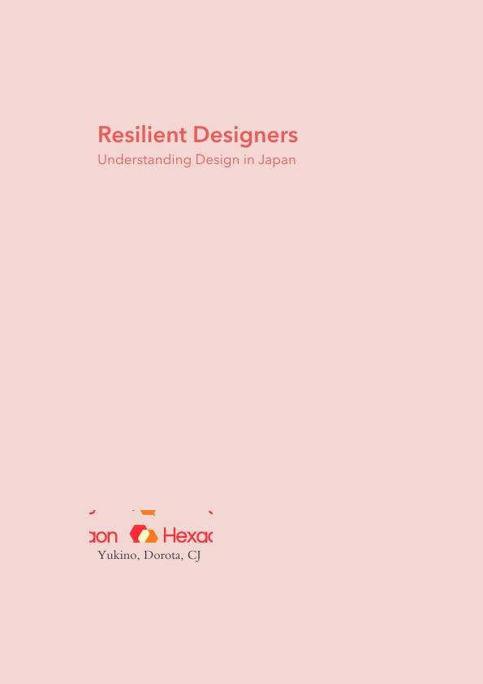
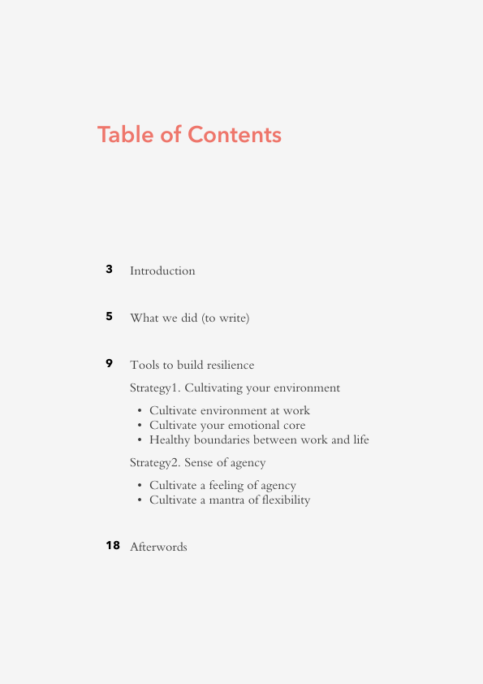
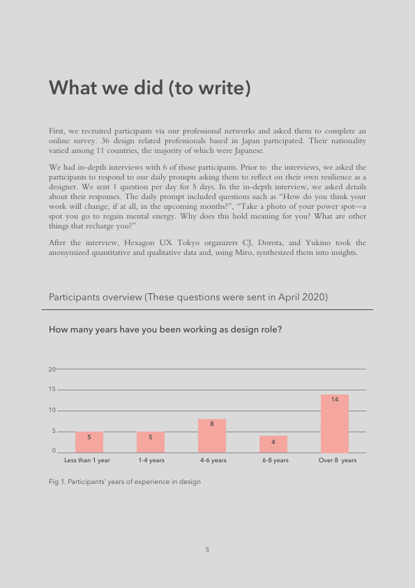

Resilient Designers
- RoleResearcher
- TeamHexagon UX Tokyo Chapter
Running events the organizers of Hexagon UX Tokyo Chapter, an international NPO focused on providing support and mentoring to womxn
and nonbinary folks, we noticed that many designers often mentioned casually that they felt lost in their career path, not sure how
to connect into the community or even unsure if they were actually a designer. We wondered if there might be a way for us to write
these thoughts down for the community. Motivated to better understand the community we were serving, we started a research project
to ask designers in Japan about their personal stories of resilience. We received responses from 36 professionals, who define
themselves as designers, whom we reached through our personal networks and through cooperation with Startup Lady Japan and Tokyo
Expat Network.
During this research, the coronavirus pandemic hit. Compared with the previous year, over half of our respondents said that their
resilience had been challenged more or significantly more. In the middle of these transitional moments, we continued this quest,
aiming to share unique stories of designers in Japan overcoming challenges with their personal, professional, and pandemic lives.
With this report, we hope to inspire designers in Japan to learn from others and share their own stories of resilience.
For this research project, we used the following methods:
- SNS to reach research target
- Google forms to collect data
- Miro for synthesis
- In-depth interviews
Report layouts




Synthesis boards